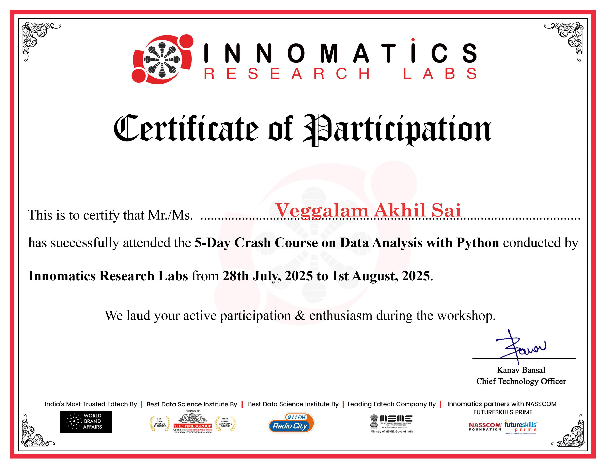
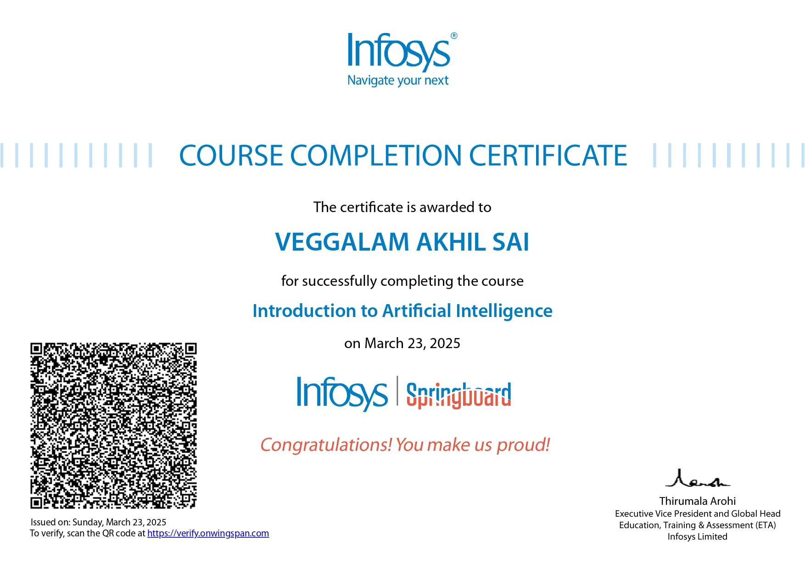
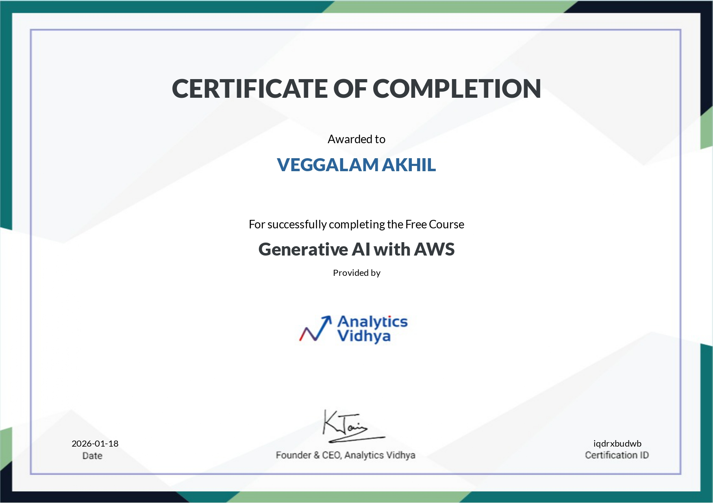

This gallery showcases my academic projects, technical skills, certifications, and achievements. It reflects my continuous learning journey in software development, web technologies, and artificial intelligence.
Explore my projects, achievements, certifications, and learning journey as a student and aspiring developer.
✦ Certifications
I successfully completed industry-recognized certification programs from IBM and Innomatics Research Labs. These certifications enhanced my knowledge in relevant technologies, strengthened my practical skills, and provided hands-on exposure to real-world concepts. They have also helped me build a strong foundation for my career in the IT industry.


✦ Events
I actively participated in various college events, including cultural programs, technical workshops, and sports activities. These experiences helped me improve my teamwork, communication, and leadership skills. Participating in different events also boosted my confidence and gave me valuable learning experiences beyond the classroom.